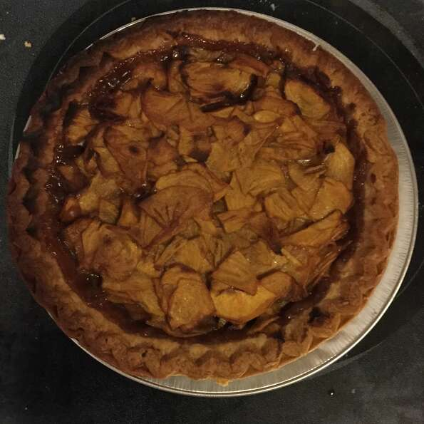

Deep Dish Meat Pie

Description
The crust on this pie is more like pizza crust than pie crust. Very easy to make on your own.
Ingredients
- Flour
- Salt
- Butter
- Water
- Onion
- Garlic
- Mincea beef
- Bullion cube
- Pepper
- Beef Seasoning
- Irish Potato
- Carrot
- Bell Pepper
- Flour
- Eggs
Steps
-
Place meat, onion, and potatoes in a small Dutch oven; add water to cover.
Bring to a boil. Reduce heat; cover and simmer until vegetables are tender. Add
salt and pepper.
-
Refrigerate for 1 hour.
-
Combine flour and water; stir until smooth. Gradually add to meat mixture; cook
over medium heat until thickened and bubbly. Cool and set aside.
-
Roll half of pastry to 1/8-inch thickness on a lightly floured surface; fit into
a deep 9-inch pie plate. Pour meat mixture into pastry shell. Roll out remaining
pastry to 1/8-inch thickness; place over filling. Trim edges; seal and flute.
Cut slits in top to allow steam to escape. Bake at 350° for 45 minutes or until
golden brown.